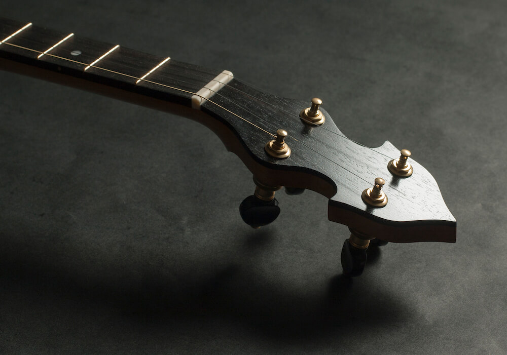

Three distinct instruments — each with a clear purpose. Built in small batches in the Annapolis Valley, Nova Scotia.

A traditional tackhead banjo built to modern playability standards. Skin head, simplified construction, and a warm old-time sound.

A modern open-back banjo built for clawhammer and old-time playing. Designed around a 25.5″ scale with 11″ or 12″ rims, emphasizing balance, clarity, and consistent playability.

Fully custom instruments developed individually with players. A one-off approach allowing exploration of materials, design, and sound.
Availability limited. Contact to discuss a potential build.
Inquire